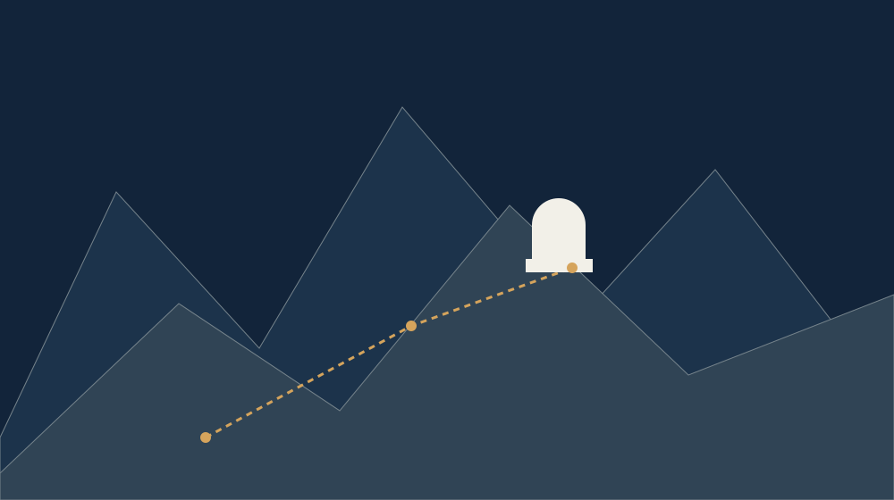

Climb
slowly.
Here the way up is part of the experience. The first stop is for stepping back from the day's rhythm and seeing the whole ridge.

Small observatories · a big sky
Checking the relief preview.
Here the way up is part of the experience. The first stop is for stepping back from the day's rhythm and seeing the whole ridge.
At the small dome we take our time. A short pause, a warmer layer and a horizon that needs no explanation.
Choose how long to watch. No view of the sky is promised here; we plan the time you want to give it.
Three stops / not a geographic plan
Outing sketch / a local plan
The times are programme examples. There is no data on a real place, weather, sky conditions or availability.
Before you set off
A warm layer, sturdy boots and water. Point your light down; give your eyes time to adjust to the dark.
Contact a real organiser about the place, access, weather, a suitable time and a safe way back. This invented plan is not a travel or safety guide.
Next / contact an organiser
Prepare an enquiry, copy it and pass it to a real organiser of your choice. This demonstration sends nothing and books no place.